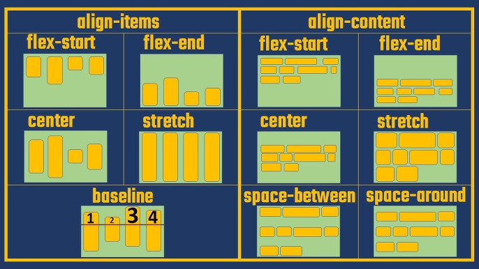
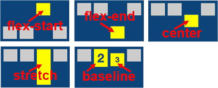

Que es el Aling Items y Aling content?
El aling-items permite ordenar alinear de forma vertical, mientras que el aling-content se utiliza para controlar la distribucion del espacio entre las lineas de in contenedor flexible, caba aclarar que solo tiene efecto en contenedores flecxibles que se envuelven en varias filas

Que es el Aling-self
Con el aling-self se permite mover un determinado elemento, primero se especifica el elemento, ya sea con un id o con una clase y se le aplica la propiedad
